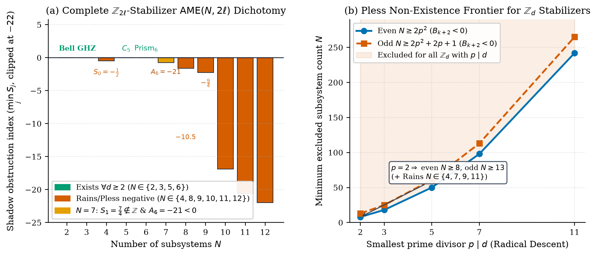
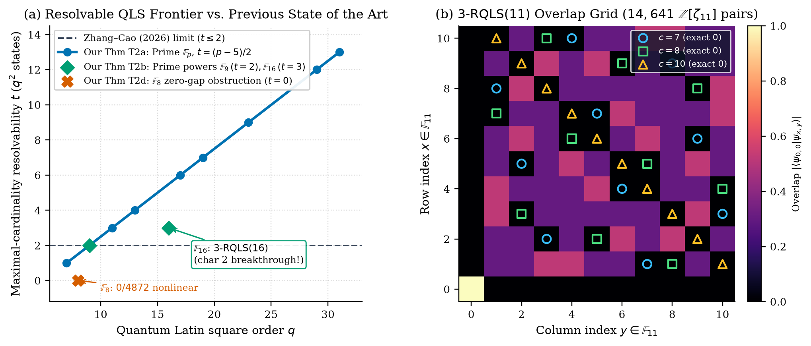
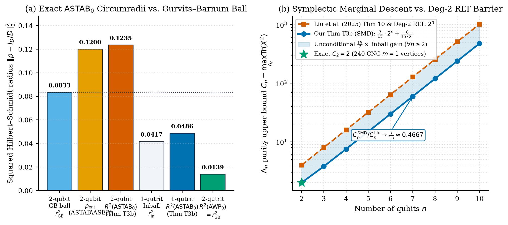
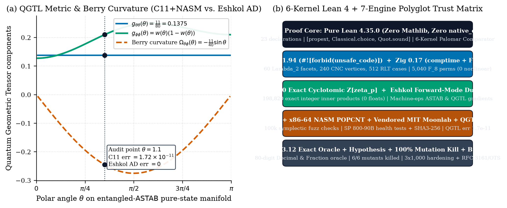

Pillar I — Complete Cyclic ℤ2ℓ-Stabilizer AME(N, 2ℓ) Classification
Extends Wójcik et al. (arXiv:2603.18193v3) to all cyclic ℤ2ℓ-stabilizer groups (including arbitrary non-canonical and non-free torsion subgroups): exists iff N ∈ {2, 3, 5, 6}, contrasted with an explicit Galois 𝔽4-stabilizer AME(4, 4).

Interactive 3-RQLS(11) Orthogonality Explorer
Click any cell (x, y) ∈ 𝔽112. Highlighted cells are exact zero inner products in ℤ[ζ11] along its row, column, and all 3 mutually orthogonal quantum transversal slopes c ∈ {7, 8, 10}.
Maximal-Cardinality t-RQLS Frontier
Breaks Zhang & Cao's (arXiv:2608.29201v2) t ≤ 2 ceiling via Megyesi–Rédei permutations: t = (p−5)/2 for all odd primes p ≥ 7, plus 2-RQLS(9), char-2 3-RQLS(16), and zero-gap 𝔽8 obstruction.

Live 2-Qubit ASTAB vs. ASEP Spectrum Lab
ASTAB Circumradii & Symplectic Marginal Descent
Gurvits–Barnum Cor. 3 forces ASTAB2,d ⊂ AWP2,d ⊆ ASEP2,d for all odd primes d ≥ 3, while Symplectic Marginal Descent delivers an exact 15/7× squared-inball gain for all n ≥ 2.

QGTL Quantum Geometric Tensor & 7-Engine Trust Matrix

Verbatim Lean 4.35.0 #print axioms Audit (23 Declarations)
'QPRigidity.Palomar.prove_t1a' depends on axioms: [propext, Classical.choice, Quot.sound] 'QPRigidity.Palomar.prove_t1b' depends on axioms: [propext, Classical.choice, Quot.sound] 'QPRigidity.Palomar.prove_t1c' depends on axioms: [propext, Quot.sound] 'QPRigidity.Palomar.prove_t1d' depends on axioms: [propext, Quot.sound] 'QPRigidity.Palomar.prove_t1e' depends on axioms: [propext, Classical.choice, Quot.sound] 'QPRigidity.Palomar.prove_t2a' depends on axioms: [propext, Classical.choice, Quot.sound] 'QPRigidity.Palomar.prove_t2b' depends on axioms: [propext, Classical.choice, Quot.sound] 'QPRigidity.Palomar.prove_t2c' depends on axioms: [propext, Classical.choice, Quot.sound] 'QPRigidity.Palomar.prove_t2d' depends on axioms: [propext, Quot.sound] 'QPRigidity.Palomar.prove_t3a' depends on axioms: [propext, Quot.sound] 'QPRigidity.Palomar.prove_t3b' depends on axioms: [propext, Quot.sound] 'QPRigidity.Palomar.prove_t3c' depends on axioms: [propext, Quot.sound] 'QPRigidity.Palomar.prove_t3d' depends on axioms: [propext, Quot.sound] 'QPRigidity.Palomar.prove_all_rigidity_theorems' depends on axioms: [propext, Classical.choice, Quot.sound] 'QPRigidity.NonVacuity.nonvacuity_pillar1_ame' depends on axioms: [propext, Classical.choice, Quot.sound] 'QPRigidity.NonVacuity.nonvacuity_pillar2_rqls55' depends on axioms: [propext, Classical.choice, Quot.sound] 'QPRigidity.NonVacuity.nonvacuity_pillar3_magic' depends on axioms: [propext, Quot.sound] 'QPRigidity.AdversarialTests.refute_path5_ame' depends on axioms: [propext, Quot.sound] 'QPRigidity.AdversarialTests.refute_pless_even_n8_p2' depends on axioms: [propext, Quot.sound] 'QPRigidity.AdversarialTests.refute_pless_odd_n13_p2' depends on axioms: [propext, Quot.sound] 'QPRigidity.AdversarialTests.refute_f8_swap67_direction' depends on axioms: [propext, Quot.sound] 'QPRigidity.AdversarialTests.refute_deg2_rlt_conjecture2_n2' depends on axioms: [propext, Quot.sound] 'QPRigidity.AdversarialTests.refute_2qubit_astab_in_gb_ball' does not depend on any axioms